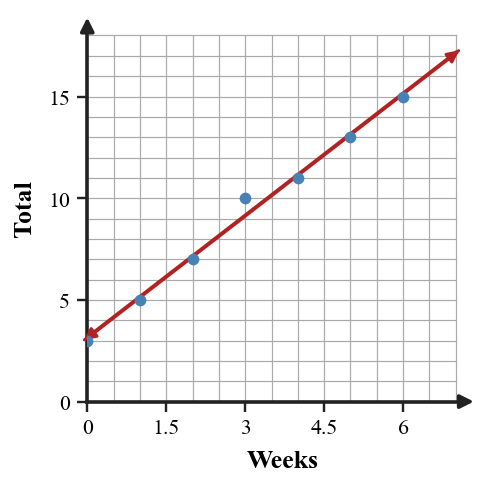

- Students match expressions, answers, or steps.
- Pieces form a complete shape (triangle/square).
- If correct, puzzle fits perfectly.
- Students match each question side to a mathematically equivalent answer side.
- Groups use disagreements to recheck calculations before forcing pieces together.
- The final shape self-checks because all interior matches agree.
- Students match pieces by shape only without solving.
- Groups trim or overlap pieces to make an incorrect match fit.
- One student assembles while others stop checking mathematics.
The editor below is preloaded with the exact activity pairs. Use Generate, Shuffle, and Print from inside the editor.
| # | Question side | Answer side | ||||||||||||||
|---|---|---|---|---|---|---|---|---|---|---|---|---|---|---|---|---|
| 1 | A model has slope $-2.5$ pounds per week. State whether the predicted quantity increases or decreases each week. | It decreases by $2.5$ pounds per week. | ||||||||||||||
| 2 | Use the cost scatter plot to estimate a linear model. Then decide whether predicting at $20$ minutes is interpolation or extrapolation.  | A reasonable model is about $y=7x+1$; predicting at $20$ minutes is extrapolation. | ||||||||||||||
| 3 | Compare the scatter plot with the table. Decide whether one linear model could reasonably represent both and justify with trend and rate evidence.
| Yes, both are positive and roughly linear; the early scatter points match the table trend closely. | ||||||||||||||
| 4 | A first line of fit for the plant data is $h=2.5w+42$. Revise the model after noticing it underpredicts weeks $6$ through $8$. Propose a better slope or intercept and justify using the scatter plot.  | One better model is about $h=3w+41$, which raises later predictions. | ||||||||||||||
| 5 | A relationship starts at ${8}$ and adds ${3}$ each step. What is the $y$-intercept? | $8$ | ||||||||||||||
| 6 | Complete the missing value for the linear relationship.
| $19$ | ||||||||||||||
| 7 | State whether $y={2}x+6$ is linear and name one reason. | Yes; it is in the form $y=mx+b$ with constant slope $2$. | ||||||||||||||
| 8 | Use the scatter plot trend and the equation $y={2}x+4$ to decide whether the scatter data grows at about the same rate. Support with evidence.  | Yes, the scatter trend grows about $2$ per step, similar to $y=2x+4$. | ||||||||||||||
| 9 | Two patterns are described: Pattern A has Figure ${0}=3$ and grows by ${6}$. Pattern B has Figure ${0}=12$ and grows by ${2}$. Build a table through Figure ${4}$ and compare. | A: $3,9,15,21,27$; B: $12,14,16,18,20$; A becomes greater by Figure $3$. | ||||||||||||||
| 10 | Compare three relationships from the graph. Rank them by rate of change and explain the evidence you used. 
| By rate: A has slope $2$, C has slope $0.5$, and B has slope $-1$. | ||||||||||||||
| 11 | Explain why the equation $y={7}$ is linear even though there is no visible $x$-term. Include a table and a graph description in your explanation. | It is linear with slope $0$; every output is $7$. | ||||||||||||||
| 12 | A school club’s table shows inputs ${0}$, ${1}$, ${2}$, ${3}$ with outputs ${10}$, ${14}$, ${17}$, ${22}$. Revise the flawed model by deciding whether one output is likely an error, replacing it, and writing a rule that fits the corrected table. | Replace $17$ with $18$; a corrected rule is $y=4x+10$. | ||||||||||||||
| 13 | For exponential growth, is the multiplier usually greater than $1$ or between $0$ and $1$? | Greater than $1$. | ||||||||||||||
| 14 | Create the next two rows of the table and choose the likely family.
| Next outputs are $21$ and $31$; likely quadratic. | ||||||||||||||
| 15 | Construct a strategy for translating a context into an equation before solving. Apply your strategy to: a phone plan charges \$12 plus \$5 per gigabyte and the total bill is \$47. | $12+5g=47\Rightarrow g=7$. | ||||||||||||||
| 16 | Design a one-variable equation model for a realistic school or club situation where the solution is $8$. Include the context, define the variable, write the equation, solve it, and interpret why $8$ makes sense. | Example: $5x+10=50$ gives $x=8$, so $8$ is the meaningful solution. | ||||||||||||||
| 17 | A data set has no clear upward or downward trend. Describe the association. | No clear association. | ||||||||||||||
| 18 | A model predicts 50 when $x=8$ and 65 when $x=11$. Find the average rate. | Average rate $=5$. |
A data set has no clear upward or downward trend. Describe the association.
A model predicts 50 when $x=8$ and 65 when $x=11$. Find the average rate.
For $y=-4x+7$, identify the slope and intercept.
Simplify $\frac{3}{5}+\frac{1}{5}$.
A data set has no clear upward or downward trend. Describe the association.
A model predicts 50 when $x=8$ and 65 when $x=11$. Find the average rate.
For $y=-4x+7$, identify the slope and intercept.
Simplify $\frac{3}{5}+\frac{1}{5}$.
- No clear association.
- Average rate $=\frac{65-50}{11-8}=5$.
- Slope $=-4$ and intercept $=7$.
- $\frac{3}{5}+\frac{1}{5}=\frac{4}{5}$.